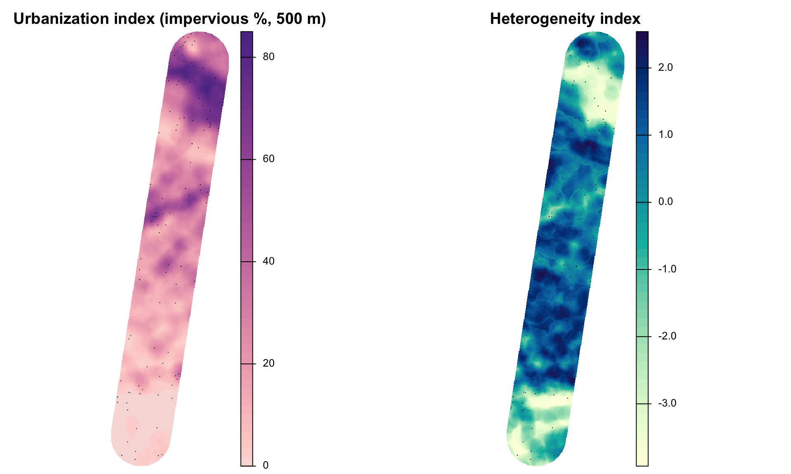
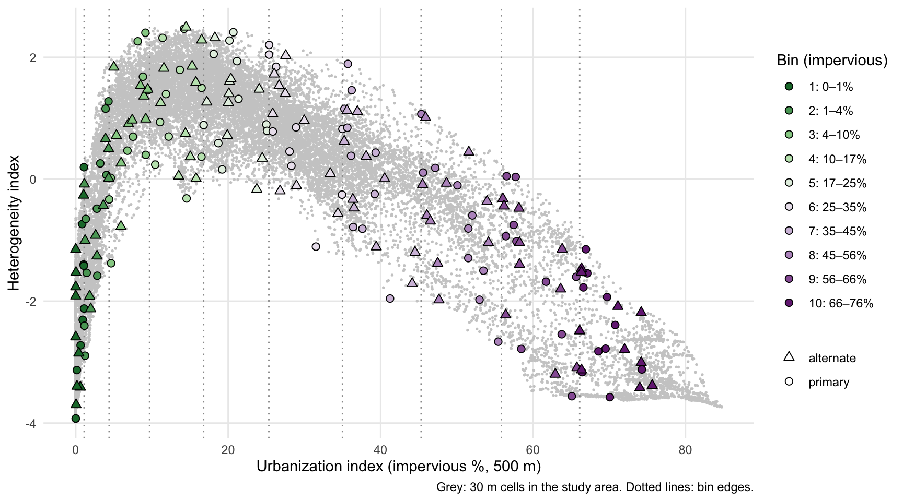
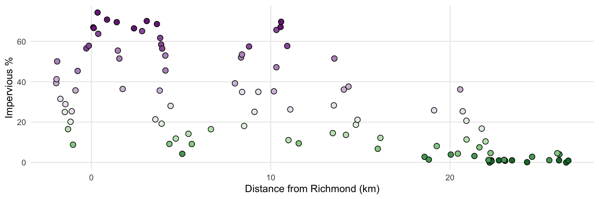

Field work needs a fixed set of focal trees: holly that will be mapped, sexed, and followed for seed set, herbivory, and pollinators. This page picks 100 of them from the holly candidates, plus ranked alternates, so that:
they are spread evenly across the urbanization gradient, from forest to downtown;
within each part of the gradient they span landscape heterogeneity (mixed versus uniform surroundings) and distance along the transect;
no two listed trees are closer than 100 m, to reduce the chance of sampling parent–offspring pairs or sibships from the same seed shadow.
These are crowns that the imagery flags as small, isolated evergreens. Some will be other species, especially on developed land (magnolia, cedar, boxwood, other ornamentals). Each bin therefore has 10 ranked alternates. If a primary is not holly, or cannot be accessed, use the next alternate in the same bin. All 200 listed trees respect the spacing rule, so any substitution keeps it.
Pool
The pool is every crown that passes the size (10–20 ft) and isolation (evergreen share ≤ 0.25) parts of the candidate rule, not cut by a tile edge. Unlike the holly candidate list, developed land is included: without it the urban end of the transect (km 0–4) has almost no candidates. Only open water is excluded. Pool size: 30,508 crowns.
Landscape context
Each crown is described by its surroundings within 500 m, computed on the native 30 m Annual NLCD grid (2025):
Metric
Meaning
imperv_mean
mean fractional impervious surface (%)
imperv_sd
standard deviation of impervious surface among cells: patchiness of development
forest_pct, developed_pct
share of forest (41–43) and developed (21–24) cover
shdi
Shannon diversity of grouped land cover (developed, developed open, forest, wetland, water, …)
shei
Shannon evenness: diversity relative to its maximum for the classes present (0 = one class, 1 = all equal)
edge_density
metres of boundary between grouped cover types per hectare
Two indices are used:
Urbanization index = imperv_mean. A PCA of all metrics was tried first, but its first axis saturated at the urban end: forest and developed shares reach 0% and 100% well before the urban core, so it could not separate suburbs from downtown. Impervious surface keeps rising all the way to the core.
Heterogeneity index = first principal component of shdi, shei, edge_density, imperv_sd across all 30 m cells in the study area (70% of their variance). Higher values mean more mixed, more evenly divided, more fragmented surroundings.
aoi_lc <-vect(st_transform(aoi, crs(land)))idx <-mask(crop(land[[c("urban_index", "heterogeneity_index")]], aoi_lc), aoi_lc)pts <-vect(st_transform(prim, crs(land)))par(mfrow =c(1, 2))plot(idx[["urban_index"]], main ="Urbanization index (impervious %, 500 m)", axes =FALSE,col =hcl.colors(50, "Purple-Orange", rev =TRUE), mar =c(0.5, 0.5, 2, 4))plot(pts, add =TRUE, pch =21, col ="black", bg ="white", cex =1.1)plot(idx[["heterogeneity_index"]], main ="Heterogeneity index", axes =FALSE,col =hcl.colors(50, "YlGnBu", rev =TRUE), mar =c(0.5, 0.5, 2, 4))plot(pts, add =TRUE, pch =21, col ="black", bg ="white", cex =1.1)

Heterogeneity is hump-shaped along the gradient: it is low in continuous forest and in the downtown core, and highest at intermediate urbanization (about 10–25% impervious), where houses, lawns, roads, and forest patches are interleaved. The two indices therefore describe different things, and a design that balanced on land-cover fractions alone would sample the peri-urban mix without controlling for it.
Selection
The urbanization index is cut into 10 bins and each bin gets 10 primaries and 10 alternates. The bins are of equal width on the arcsine-square-root scale of the impervious fraction, the standard transform for proportions. Equal-width bins on raw impervious % put the whole forest end (0–10%) into one bin and most of the sample into the city; the transform gives the forest end and the urban core similar resolution.
Within each bin, trees are added one at a time. Each new tree is the eligible crown farthest (in standardized heterogeneity index and distance along the transect) from the trees already chosen in that bin, so a bin’s trees span both. A crown is eligible only if it is at least 100 m from every tree already listed in any bin. Bins with the fewest crowns are filled first so that the spacing rule does not crowd them out. The first tree in each bin is random (seed 2025 in config.yml), so a rerun gives the same list.
Coverage
Code
pool_s <-as.data.frame(mask(land[[c("urban_index", "heterogeneity_index")]], aoi_lc), na.rm =TRUE)pool_s <- pool_s[sample(nrow(pool_s), min(20000, nrow(pool_s))), ]ggplot() +geom_point(data = pool_s, aes(urban_index, heterogeneity_index), colour ="grey80", size =0.3) +geom_vline(xintercept = bins$imperv_from[-1], colour ="grey60", linetype ="dotted") +geom_point(data =st_drop_geometry(focal), aes(urban_index, heterogeneity_index, shape = role,fill =factor(bin)), size =2.2) +scale_fill_manual(values = bin_pal, labels = bin_lab, name ="Bin (impervious)") +scale_shape_manual(values =c(primary =21, alternate =24), name =NULL) +guides(fill =guide_legend(override.aes =list(shape =21))) +labs(x ="Urbanization index (impervious %, 500 m)", y ="Heterogeneity index",caption ="Grey: 30 m cells in the study area. Dotted lines: bin edges.") +theme_minimal() +theme(panel.grid.minor =element_blank())

Code
ggplot(st_drop_geometry(prim), aes(u_km, urban_index, fill =factor(bin))) +geom_point(shape =21, size =2.5) +scale_fill_manual(values = bin_pal, labels = bin_lab, name ="Bin") +labs(x ="Distance from Richmond (km)", y ="Impervious %") +theme_minimal() +theme(legend.position ="none", panel.grid.minor =element_blank())

Primaries are spread along the whole transect, but not evenly by kilometre. The most urban bins (8–10) lie within the first ~14 km and the least urban bin entirely beyond km 22, while the intermediate bins are spread along most of the route, because suburban and peri-urban land recurs all along it (including the corridor of higher development near km 9–11). That is the intended trade-off of balancing on the gradient rather than on distance.
Spacing
Code
# Centre-to-centre distances, as used by the spacing ruled <-st_distance(st_centroid(st_geometry(focal)))units(d) <-"m"d <-matrix(as.numeric(d), nrow(focal))diag(d) <-Infnn <-apply(d, 1, min)nn_p <-apply(d[focal$role =="primary", focal$role =="primary"], 1, min)
The closest pair of listed trees is 101 m apart (crown centre to centre). Among primaries only, the median distance to the nearest other primary is 470 m (range 107–1381 m).
Map
Primaries are circles and alternates are triangles (smaller), coloured by bin. Click a tree for its id and context.
Code
ll <-st_transform(st_centroid(focal), 4326)ll$col <- bin_pal[ll$bin]ll$popup <-sprintf("<b>%s</b> (%s, bin %d)<br>Crown %s, %.0f ft<br>Impervious %.1f%% | forest %.0f%%<br> Heterogeneity %.2f | evenness %.2f | edge %.0f m/ha<br>%.1f km along transect<br>%.6f, %.6f", ll$focal_id, ll$role, ll$bin, ll$obj_id, ll$diam_ft, ll$imperv_mean, ll$forest_pct, ll$heterogeneity_index, ll$shei, ll$edge_density, ll$u_km, ll$lat, ll$lon)pal <-colorFactor(bin_pal, levels =seq_len(fc$n_bins))leaflet() |>addProviderTiles(providers$Esri.WorldImagery, group ="Imagery",options =providerTileOptions(maxNativeZoom =19, maxZoom =21)) |>addProviderTiles(providers$Esri.WorldGrayCanvas, group ="Light") |>addPolygons(data =st_transform(aoi, 4326), color ="white", weight =1, fill =FALSE) |>addPolylines(data =st_transform(line, 4326), color ="white", dashArray ="6", weight =2) |>addCircleMarkers(data = ll[ll$role =="alternate", ], radius =3, color =~col, weight =1,fillOpacity =0.6, popup =~popup, group ="Alternates") |>addCircleMarkers(data = ll[ll$role =="primary", ], radius =6, color ="black", weight =1,fillColor =~col, fillOpacity =0.9, popup =~popup, group ="Primaries") |>addLegend(colors = bin_pal, labels = bin_lab, title ="Bin (impervious)", opacity =0.9) |>addLayersControl(baseGroups =c("Imagery", "Light"), overlayGroups =c("Primaries", "Alternates")) |>hideGroup("Alternates")
Primary trees
Code
prim |>st_drop_geometry() |>arrange(bin, u_km) |>transmute(ID = focal_id, Bin = bin, `km`=round(u_km, 1), `Impervious %`=round(imperv_mean, 1),`Forest %`=round(forest_pct), Heterogeneity =round(heterogeneity_index, 2),`Crown (ft)`=round(diam_ft), Lat =round(lat, 6), Lon =round(lon, 6)) |> knitr::kable()
ID
Bin
km
Impervious %
Forest %
Heterogeneity
Crown (ft)
Lat
Lon
F001
1
22.2
0.0
100
-3.93
14
37.39197
-77.54211
F002
1
22.3
1.1
89
-2.12
15
37.40045
-77.57370
F003
1
22.3
0.6
94
-2.72
10
37.39995
-77.57251
F004
1
22.7
1.0
82
-1.40
18
37.39896
-77.58245
F005
1
23.1
0.8
68
-0.74
15
37.39586
-77.58325
F006
1
23.5
1.1
68
0.20
11
37.39026
-77.57686
F007
1
24.3
0.1
97
-3.13
13
37.37651
-77.55765
F008
1
26.1
1.1
83
-1.42
17
37.36513
-77.57703
F009
1
26.5
0.0
100
-3.92
13
37.36448
-77.58783
F010
1
26.6
0.9
91
-2.31
16
37.36059
-77.57855
F011
2
5.1
4.3
6
1.28
11
37.54812
-77.51289
F012
2
18.6
2.8
73
-0.48
12
37.43325
-77.56367
F013
2
18.8
1.4
85
-1.54
15
37.43152
-77.56557
F014
2
20.0
3.9
54
1.16
14
37.41334
-77.54390
F015
2
21.4
3.2
73
0.26
15
37.39955
-77.54010
F016
2
22.1
1.2
96
-2.89
15
37.39550
-77.55187
F017
2
23.0
1.3
75
-0.65
14
37.39444
-77.57643
F018
2
24.6
2.8
86
-1.58
15
37.37838
-77.57307
F019
2
25.5
1.1
93
-2.40
14
37.37168
-77.58154
F020
2
26.1
4.0
62
0.07
17
37.36009
-77.56068
F021
3
-1.0
8.8
37
1.68
10
37.59556
-77.47522
F022
3
4.3
9.2
13
0.40
14
37.55065
-77.49811
F023
3
5.6
9.1
15
2.40
14
37.53495
-77.48565
F024
3
11.6
9.5
50
1.46
15
37.48999
-77.52742
F025
3
16.0
6.8
47
0.47
10
37.44711
-77.52579
F026
3
19.3
8.1
44
2.26
12
37.41921
-77.53826
F027
3
20.4
4.4
74
-0.33
11
37.41316
-77.55603
F028
3
21.6
7.5
56
0.70
15
37.40797
-77.57761
F029
3
22.3
4.6
84
-1.38
10
37.39837
-77.56530
F030
3
26.0
4.6
55
0.02
13
37.36035
-77.55785
F031
4
-1.3
16.5
17
1.50
13
37.59752
-77.47280
F032
4
4.7
11.8
12
1.40
14
37.54772
-77.49975
F033
4
5.4
14.2
13
2.47
15
37.53799
-77.48983
F034
4
6.7
16.5
3
0.37
10
37.52713
-77.49382
F035
4
11.0
11.1
59
0.94
15
37.49369
-77.52136
F036
4
13.5
14.5
0
-0.32
15
37.47691
-77.54492
F037
4
14.2
13.7
8
1.79
16
37.47058
-77.54739
F038
4
16.1
12.2
7
0.70
12
37.44911
-77.53723
F039
4
20.9
11.4
40
2.32
13
37.40614
-77.54811
F040
4
22.0
10.4
65
0.24
10
37.40036
-77.56291
F041
5
-1.5
25.0
8
0.90
12
37.60048
-77.47701
F042
5
-1.2
20.2
23
2.27
10
37.59820
-77.47968
F043
5
3.6
21.4
0
1.32
18
37.55922
-77.50160
F044
5
3.9
19.2
0
0.16
10
37.55406
-77.49551
F045
5
8.5
18.1
28
2.05
12
37.51905
-77.52675
F046
5
9.1
25.1
0
0.79
20
37.50198
-77.48782
F047
5
14.7
18.7
0
0.59
16
37.45784
-77.52237
F048
5
14.8
21.2
19
1.94
16
37.46482
-77.54886
F049
5
20.9
20.7
35
2.41
13
37.40251
-77.53559
F050
5
21.8
16.8
53
0.89
16
37.40299
-77.56496
F051
6
-1.7
31.5
0
-1.11
13
37.60209
-77.47439
F052
6
-1.5
28.9
3
0.85
10
37.60122
-77.48052
F053
6
-1.1
25.4
21
2.20
12
37.59793
-77.48085
F054
6
4.4
28.1
0
0.46
14
37.54444
-77.47925
F055
6
8.4
34.9
0
-0.25
12
37.51262
-77.50137
F056
6
9.3
35.0
12
0.83
17
37.50944
-77.51994
F057
6
11.1
26.3
42
1.84
13
37.49448
-77.52732
F058
6
13.5
28.3
2
0.22
15
37.46780
-77.51608
F059
6
19.1
25.9
15
0.78
13
37.42345
-77.54778
F060
6
20.7
25.4
35
2.04
17
37.40465
-77.53615
F061
7
-2.0
39.3
0
0.44
11
37.60111
-77.46357
F062
7
-2.0
41.2
0
-1.96
12
37.60267
-77.46939
F063
7
-0.9
35.7
21
1.89
19
37.59632
-77.48227
F064
7
1.7
36.4
0
-0.78
15
37.57404
-77.49248
F065
7
3.8
35.6
0
0.85
11
37.55402
-77.49193
F066
7
8.0
39.2
0
-0.24
12
37.51305
-77.48976
F067
7
10.2
35.3
26
1.15
14
37.50012
-77.51672
F068
7
14.1
36.1
4
0.38
14
37.46600
-77.52815
F069
7
14.3
37.6
0
-0.81
13
37.45758
-77.50807
F070
7
20.6
36.2
20
1.46
10
37.40528
-77.53375
F071
8
-1.9
50.1
0
-0.10
15
37.59924
-77.45895
F072
8
-0.8
45.3
13
1.07
14
37.59572
-77.48412
F073
8
1.5
55.4
0
-2.66
11
37.57609
-77.49061
F074
8
1.6
51.5
0
-1.29
17
37.57748
-77.49805
F075
8
4.1
53.0
0
-1.98
17
37.54394
-77.46806
F076
8
4.1
45.6
0
0.11
10
37.54567
-77.47412
F077
8
8.3
52.0
0
-0.59
10
37.50993
-77.49033
F078
8
8.4
53.5
0
-1.50
12
37.50804
-77.48560
F079
8
10.3
47.2
23
0.19
12
37.50039
-77.52207
F080
8
13.5
51.5
1
-0.81
12
37.47025
-77.52524
F081
9
-0.3
56.5
8
0.05
15
37.59096
-77.48384
F082
9
-0.1
57.8
0
-1.02
12
37.59142
-77.48998
F083
9
0.4
63.8
0
-2.54
18
37.58072
-77.47074
F084
9
2.8
65.1
0
-3.56
20
37.55886
-77.47639
F085
9
3.8
61.7
0
-1.68
16
37.54834
-77.47358
F086
9
3.9
58.5
0
-2.78
16
37.55151
-77.48605
F087
9
3.9
56.4
0
-0.93
14
37.54712
-77.47309
F088
9
8.8
57.5
0
-0.75
15
37.50830
-77.49933
F089
9
10.3
65.7
3
-1.60
10
37.50172
-77.52667
F090
9
10.9
57.7
15
0.04
14
37.49730
-77.53132
F091
10
0.1
66.9
0
-1.15
12
37.58722
-77.48371
F092
10
0.1
66.6
4
-1.77
10
37.58525
-77.47800
F093
10
0.3
74.3
0
-3.12
12
37.58311
-77.47765
F094
10
0.9
70.8
0
-2.39
19
37.57359
-77.46260
F095
10
1.4
69.5
0
-2.78
20
37.57422
-77.48234
F096
10
2.4
66.4
0
-3.16
11
37.56369
-77.47798
F097
10
3.1
70.1
0
-3.58
13
37.55495
-77.47164
F098
10
3.6
68.6
0
-2.82
13
37.55037
-77.47458
F099
10
10.5
67.1
7
-1.54
10
37.49963
-77.52717
F100
10
10.6
69.7
1
-1.93
11
37.49994
-77.52917
The full list with alternates is data/derived/focal_trees.csv (and .gpx for GPS units and phone apps). Each row carries the crown id from the candidate run, so field records can be joined back to imagery features.
Notes
Spacing. 100 m is a working choice. Holly fruit is bird-dispersed, and most seeds of bird-dispersed trees fall within a few hundred metres of the parent, so trees 100 m apart can still be related. A genetic check (e.g. a kinship estimate from markers) on the final set would show how much residual relatedness remains. Increase min_spacing_m in config.yml and rerun R/08_focal_trees.R (about 30 s) to tighten it.
Scale. Landscape context uses a 500 m radius, a common scale for urban landscape effects on plants and their insects. Pollinator and leaf-miner responses may work at other scales; the metrics can be recomputed at several radii for analysis without changing the tree list.
Access. Urban bins fall largely on private land (yards, institutional grounds). Expect more substitutions there, from both access and ornamental look-alikes.
NLCD limits. Context comes from 30 m NLCD, so small features (a single street tree’s yard, a narrow riparian strip) are blurred. Neighbourhoods near the edge of the NLCD extract are truncated.